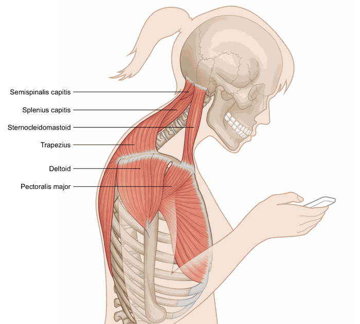
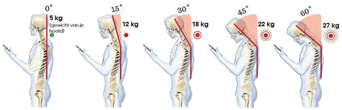
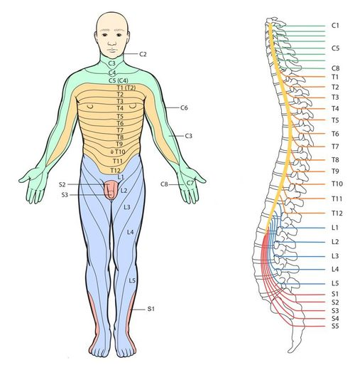

Nekklachten
Nekklachten kunnen heel vervelend zijn en kunnen een breed aantal oorzaken hebben.
Verkeerde houding, stress of een whiplash zijn voorbeelden van veelvoorkomende oorzaken. Wat deze oorzaken gemeen hebben met elkaar is dat het allemaal vormen van overbelasting zijn. Dit kan gaan om vormen van structurele overbelasting (stress of een verkeerde houding) ofwel vormen van acute overbelasting (zoals het plotseling maken van een verkeerde beweging of een whiplash).
Wat er vaak gebeurt is dat bepaalde spieren verkrampen. Hierdoor krijg je een bewegingsbeperking en kan er pijn optreden. Er kan sprake zijn van pijn in de nek zelf, of het manifesteert zich in uitstraling vanuit de nek naar perifere lichaamsdelen zoals schouder, arm, hand etc. Dit wordt vanuit meerdere theorieën verklaard waarbij de twee voornaamste hieronder uitgelegd.


Referred Pain Principe & Myofasciale Triggerpoints (Dry Needling)
Dit evidence based principe verklaart hoe bijvoorbeeld hoofdpijn, duizeligheid en pijn in de schouder of arm kan ontstaan door spierspanning in de nek.
Een spier wordt namelijk aangestuurd vanuit de hersenen via zenuwbanen die op een bepaald niveau de cervicale wervelkolom uittreden. Vanuit dit niveau van de wervelkolom ontvangen en sturen de hersenen ook informatie van en naar andere spieren en huidgebieden. Deze in- en uittredende informatie kan met elkaar interfereren waardoor bijvoorbeeld een gespannen spier in de nek —> pijnklachten geeft aan de schouder.
Vanuit dit principe komt ook het begrip myofasciale triggerpoints waarop de alom geprezen en succesvolle methode Dry Needling is gebaseerd. Een trigger point is een (druk)pijnlijke lokale samentrekking van een klein deel van de spier en voelt aan als een “knoop.” Door druk op een trigger point kan een herkenbare uitstralende pijn op een andere plaats in het lichaam ontstaan. Iedere spier heeft een uniek en karakteristiek uitstralingsgebied welke kenmerkend is voor de betreffende spier. Het zijn bepaalde punten in de spier die anatomisch gezien de meeste spanning vasthouden en die bij een release, de gehele spier kunnen doen ontspannen. Hier meer over bij DRY NEEDLING.

Ten tweede kan uitstraling verklaard worden op basis van zenuwen die bekneld worden. Dit kan vanuit de nek zelf gebeuren of in het verloop van de zenuw. Als het vanuit de nek bekneld wordt, dan ontstaat er een klachtenbeeld op basis van dermatomen en als de zenuw in het verloop bekneld wordt dan heeft het een ander klachtenbeeld, zo kan je als therapeut onderscheid maken en herleiden wat de oorzaak van de klacht is.
Als de zenuw in het verloop bekneld wordt, dan kan dat zijn doordat bepaalde spieren gespannen zijn en daardoor verdikt en tegen een zenuw aandrukken, dat geeft dan pijn of tintelingen in een bepaald gebied.
